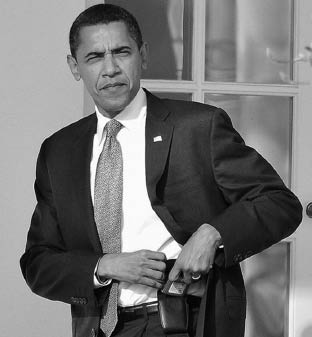

TDK’dan:
İtüzümü (Böğürtlen)
1. Gülgillerden, bahçe çitlerinde, yol kenarlarında kendiliğinden yetişen dikenli ve çok yıllık bir çalı, diken dutu, itüzümü (Rubus caesius).
Elime aldığımda plastik hissiyle birlikte hafifliği beni biraz rahatsız etmişti. Bu hissi durumun yanında akıllı telefon çılgınlığının öncülerinden Blackberry’nin başka özellikleri de dikkatimi çekiyordu. Kanada ve İngiltere’de tek merkezden dağıtımını yaptığı mesaj özelliğinin çok insan tarafından kullanılmasına karşın, fazlaca merkezci bir yapıda olduğunu düşünüyordum.
Günlük yaşantımda hukuk, finans, emlak, sigorta, sağlık gibi sektör çalışanları olmak üzere, artık sıradan arkadaşlarımda bile Blackberry telefonlardan görüyordum. Öyle ki istatistiklere göre yüzde 38’i bireysel, yüzde 62’si kurumsal olmak üzere dünya üzerindeki kullanıcı sayısı 14 milyonu bulmuş durumda. Son dönemlerde firma hızla dibe doğru gitmeye devam etse de halen elindeki kullanıcı kitlesi, patentler azımsanmayacak değerde.
Böyle geniş bir kitleye yayılmışken, Blackberry güvenliği üzerine yaptığım araştırmalar bende küçük çaplı bir buhrana neden oluyordu. Bu sorunla alakalı bazı ülkeler kendi insiyatiflerini kullanarak çeşitli pozisyonlar almaya başladıklarında firmada ufaktan bir panik havası başladı. Bu furya içerisinde belki de en komik açıklama Blackberry Türkiye’den geldi: “Blackberry’den attığınız e-postalar kişisel bilgisayarlardan atılanlara göre daha güvenli. Fransa Başbakanı Sarkozy bile kullanıyor!” dediler.
Herhangi bir devlet başkanı, kuruluş ya da teşkilatın bir ürünü kullanıyor olması o ürünün yeterliliğini nesnel ya da teknik anlamda kanıtlamazken, yetkililerden gelen bu yüzeysel yorum üzerine söyleyebilecek pek fazla şey bulamamıştım. Bu tavır olsa olsa “Fazla karıştırmayın işte güvenli diyoruz, Sarkozy kullanıyorsa siz düşünmeyin bile!” şeklinde yorumlanabilirdi.
Peki gerçekte böyle miydi?
Aslında Ağustos 2011’de Fransız Milli Savunma Sekreteryası, RIM’nin sunucularının İngiltere ile Kanada’da bulunması nedeniyle, denizaşırı ülkelerin gizli servislerinin kişisel verilere ulaşmasından kaygı duyduğunu söylüyor, Sarkozy ile devlet yetkililerinin Blackberry hizmetlerini kullanmaya son vermelerini öneriyordu.
ABD’de ise silah ve kanla beslenen Cumhuriyetçiler yerine teknolojiden beslenen Demokrat Başkan Obama’nın iktidara gelmesiyle birlikte teknoloji firmaları birkaç adım daha öne çıkmıştı. Obama’nın her yerde Blackberry cihazıyla arz-ı endam etmesi dikkatimden kaçmadı. Bu ABD’de hep yapılan bir pazarlama stratejisiydi. RIM güven sağlamak için Sarkozy gibi Obama’nın da Blackberry kullandığına her mecrada vurgu yaptığından dünya basınında bu kareleri sık sık görmek mümkündü.

Obama, Blackberrysi ile.
“Dış görünüşe aldanmayın” diye bir laf vardır. Kimi arkadaşlarım “Koskoca ABD Başkanı’yla aynı telefonu kullanıyorum” diye hava atıp içleri rahat şekilde dolaşırken tam da bu hataya düştüler. Başkan’ın elindeki telefon görünüş olarak kendilerinkiyle aynıydı belki ama ya işlevi?
Tam bu noktada Obama’nın kullandığı o meşhur Blackberry’nin özelliklerine göz atmakta fayda var. Adına “Presidental Blackberry” denilen bu cihaz çok kısıtlı sayıda uygulama yüklü ve cihazın donanımında ulusal güvenlik nedeniyle açıklanmayan bir takım değişiklikler yapılmış. Yani bildiğimiz Blackberry’lerden biraz farklı, özel üretim bir ürün. Başkan’ın bu cihazına ulaşabilen 10 kişi de devlet görevlisi olduğu için gelen e-postaların içeriklerini, resmi dokümanlar, toplantı tarihleri ve önemli devlet konuları oluşturuyor. Tüm bu yazışmalar Kanada ile İngiltere’deki Blackberry sunucuları yerine Beyaz Saray bünyesindeki özel sunucularda tutuluyor.
Durup düşününce bir tarafta insanların eğilimleri, sosyal yaşamları, aktiviteleri, kişisel bilgileri hakkında ayrıntılı bilgi toplayabileceği Twitter, Facebook gibi dünya çapına yayılmış sosyal bir veritabanı; diğer tarafta ise dünya üzerindeki devlet kuruluşları, askeri kuruluşlar hakkında bilgi toplayabileceği Blackberry gibi bir devlet veritabanı ile ABD somut manada her şeyi avucu içine almış gibi geliyordu.
Bu durumda pastadan pay kapamayan, oyunun dışında kalan pek çok ülke vardı. Almanya, Fransa, Suudi Arabistan, Hindistan, Birleşik Arap Emirlikleri ve Kuveyt kendi vatandaşlarına ait Blackberry mesajlarına erişim verilmemesi halinde servisi ülkelerinde yasaklayacaklarını duyurduğunda yer yerinden oynamıştı. Geç de olsa durumu fark eden devletler hiç olmazsa kendi vatandaşlarının mesaj trafiğini izleyerek en azından veritabanından kendilerine pay kapmak için kartlarını açık oynama yoluna gitmeyi tercih etti. Tabii ki böyle bir tutum Blackberry ile birlikte dolaylı yoldan ABD’nin de başını ağrıtmaya yetecek güçteydi.
Yalnız ve güzel ülkem ise 2011 yılının sonlarına kadar mahallenin saf çocuğuna benziyordu. Uzun süre Blackberry hakkında “yasaklarız” gibi bir rest çekilmediği için RIM firması veritabanını Türkiye’ye açmak için bir adım atmadı. Üstelik Türkiye’de yaklaşık 600 bin Blackberry kullanıcısı bulunuyorken pazarlık için elimiz de son derece kuvvetliydi. Hem eğer ABD okuyorsa, neden Türkiye Cumhuriyeti mesajları okumasın? Kimsenin mesajının okunamayacağı, merkezi olmayan, şifreli bir yapı olsa sorun olmayacakken böyle bir durumda Türk devletinin de kendi vatandaşlarının mesajlarına erişebilmesi gerekiyordu.
Bundan cesaret alarak İHA haber ajansına bir açıklama yaptım. Bu açıklamada Blackberry’nin sistemlerini son dönemde altı ülkeye açtığını ama bu sistemler arasında niye Türkiye’nin bulunmadığını anlamakta güçlük çektiğimden bahsettim. İHA’ya yaptığım bu açıklama gazetelerde yayımlanınca çok ses getirdi.
Konuya iki açıdan bakmak mümkündü.
Bir açıdan Blackberry ile atılan mesajlar Türk hükümeti tarafından izlenemiyordu. Diğer bir açıdan ise bir sürü ülkeyle paylaşılan bu veriler niye Türk hükümetiyle paylaşılmıyordu? Benim dikkatimi çeken, özellikle üzen ikincisiydi. Acaba Bursa’da çocukları taciz eden kişi bunu bugün üstelik Blackberry telefon kullanarak yapsaydı, çocuk tacizcileriyle haberleşseydi? Bu ve bunun gibi durumların önüne geçmek gerektiğini kim reddedebilir ki...
Gazetelere bu konuyla alakalı yaptığım açıklamadan bir hafta sonra Ulaştırma Bakanı’ndan “Sistemlerini açacaklar, yoksa yasaklarız” açıklaması geldi. Bakanlığın çektiği rest sonrası Blackberry verileri paylaşmayı kabul etti.